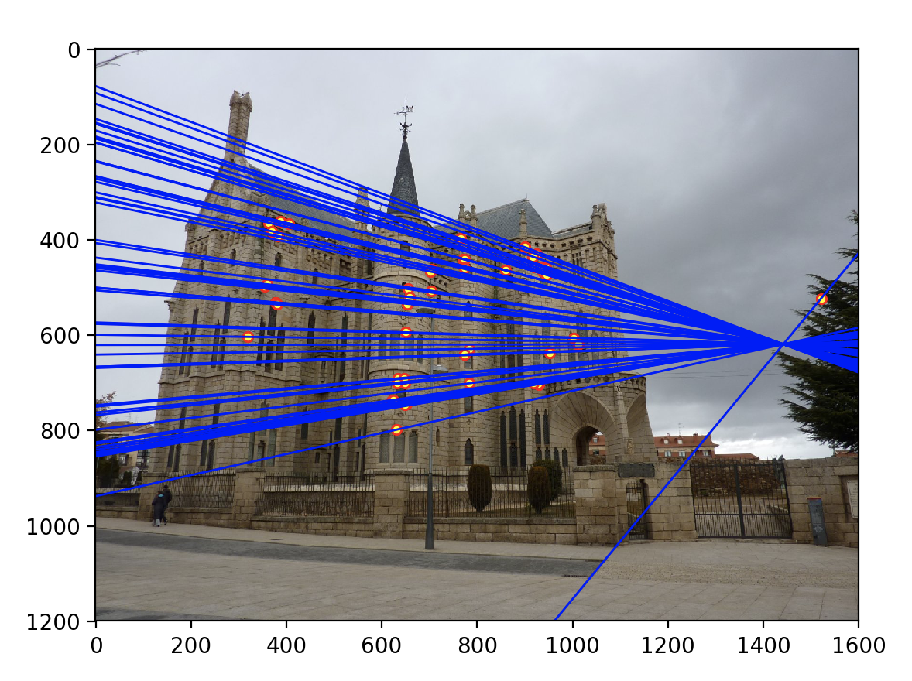
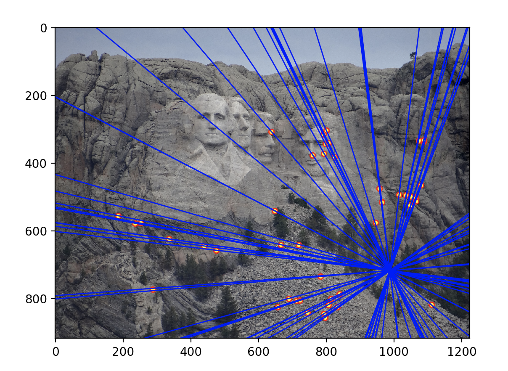

The goal of this project is to explore camera and scene geometry. Throughout this project I will compute the projection matrix that transforms 3D coordinates to 2D, obtain camera coordinates, estimate the fundamental matrix, and ultimately use RANSAC to find the "best" Fundamental Matrix. Ultimately, the objective is to obtain greater accuracy when matching features between images 2 images.
For the first part of the project, I used Method 2 which utilizes nonhomogeneous linear systems to solve for the unknown camera parameters. I first implemented Matrix A as demonstrated in image 1 as well as matrix b (which is the 2D points flattened). Then I used linalg.lstsq() to solve for the equation using linear least squares. The resulting array of length 11 is then appended with a '1' and reshaped into a (3,4) matrix to avoid a solution of all 0s.
Image 1: Method 2 Solving for m's entries using linear least squares
Subsequently to verify my calculate_projection_matrix(), I compared it to the given scaled equivalent matrix provided by the project. In image 2, the projected points using my projection matrix closely matched that of the actual points with a small residual of 0.044535, demonstrating that the projection matrix is performing as intended.
Image 2: Verifying Projection Matrix
Because I have extracted the projection matrix M, it is now possible to extract the camera center by using the equation: (-Q^-1)m_4 where Q is M[0:3,0:3] and m_4 is the fourth column of the projection matrix.
Image 3: Estimated Location of Camera
Similar to Part 1, Part 2 estimates a fundamental matrix with given 2d coordinates from 2 images. Before, attempting to estimate the matrix, I first needed to normalize the points; this was done by first taking the mean of 'u' and 'v' and then subtracting them to the 'u's and 'v's of the matrix. Subsequently, the scale is determined by taking the reciprocal of the standard deviation of this subtracted matrix. The norm is the resulting product of the mean subtracted matrix and the scale. Furthermore, a Transform matrix is also returned in my normalizePoints() which is demonstrated in image 4.
Image 4: Transform Matrix where s denotes scale and -c denotes means of u and v
Next, in order to estimate the fundamental matrix, I utilized the equation in image 5. Again I implemented matrix A, and solved for the fundamental matrix using np.linalg.lstsq(). This resulted in a array length of 8 which I appended a 1 similar to part 1. Finally, I reshaped the array into a (3,3). Because the resulting fundamental matrix is full rank and needed to be a rank 2, I used SVD to decompose the matrix and set the smallest value in S to 0. I recombined this matrix by U @ S_new @ Vh then scaled my coordinates using my Transform Matrices for point a and point b. The estimated matrix is provided below:
Image 5: Eight-Point Algorithm Ax = -1
Image 5: Eight-Point Algorithm Ax = -1
Image 6: Scaling the Coordinates
Testing my algorithm, the images with epipolar lines were produced below. It appears that every feature point is intersected by at least one epipolar line.
Below are the epipolar lines generated with non norm coordinates. While the epipolar lines again passes through all the points, there are subtle differences where the lines are less centered to each intersection which may be more prone to errors.
For the final part of the project, I implemented RANSAC which essentially computes a "best" fundamental matrix by using randomly matched elements. After 'n' iterations the fundamental matrix that produced the most number of total inliers is deemed the best fundamental matrix. I tried thresholds ranging from .001 to 1 and found that .005 seem to have produced the best results along with an iteration of 2000. The following results were produced:
The Image below for notre dame is produced by using non-norm coordinates when generating the fundamental matrix. Although on a broad basis, there are a lot of accurate points, it is evident that there are a lot more mismatches compared to the notre dame images further below using normalized coordinates. Both are generated with an error threshold of .005 and 2000 iterations.
Below are images generated with .005 thresholds with normalized points:
|  |
|  |
Below are images generated with .05 thresholds:
All in all, using epipolar lines in project 3, appears to have significantly achieved a higher accuracy for matching in comparison to project 2; this was mainly attributed to the use of epipolar lines. Epipolar lines constrains the search for an image point in image 1 to a corresponding point in image 2 from 2D to 1D. Matches now had to correspond to an epipolar line or they are thrown out which significantly reduces the number of spurious results if the epipoles are generated correctly. After completing the algorithm, I tested multiple thresholds with different number of 'training' iterations. Decreasing the threshold, I saw much more accurate matches but very few inliers. By increasing the threshold, the algorithm produced much more matches but with more outliers as well. This was because the "best" fundamental matrix produced from the RANSAC algorithm had a greater tolerance to the distance.